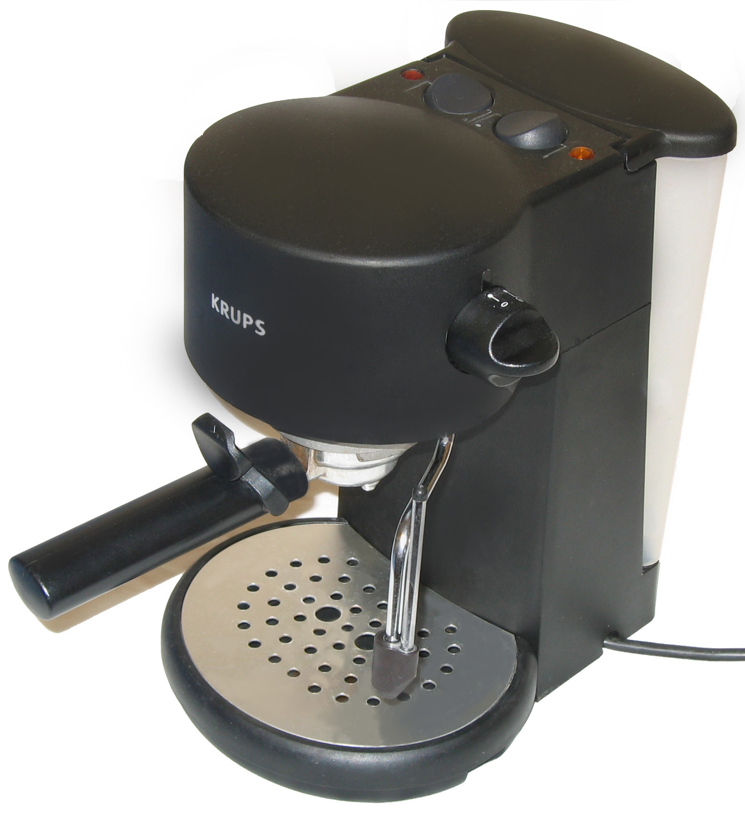
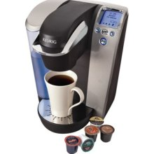
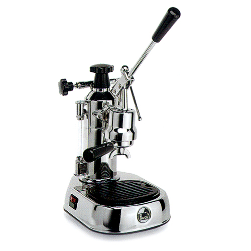
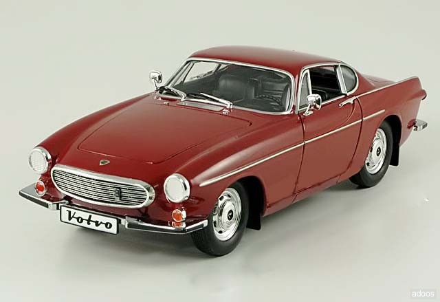

Usability, User Experience, and Coffee
When Bad Usability is Good User Experience
4 January 2012
Coffee and Design have a long history together -It's unclear if anyone could focus on kerning in the wee hours without it. But what about the design of coffee itself? After my old espresso machine broke, I decided for fun to rethink my "coffee experience strategy".
Little did I know that the quest for quality in coffee leads you into a topsy-turvy world where basic definitions are unstable. Difficulty can be a challenge, slower can be better, and your preferences can change while you explore. The fundamental measure, coffee taste, is not universally agreed, nor actually quantifiable by the lay person. Indeed, the thing being measured is not the object but the user's perception of it.
Usability is a good concept, but it has the unspoken assumption that there is an objective task to be measured against. What if the task is unclear, even to the user? What about entertainment or aesthetic activities? We can measure the usability of a small task, but not the overall experience.
The background
 My original Krups cappuccino machine had 2 buttons on the top, a knob on the side and a minimal design aesthetic. Too minimal. Years of watching guests struggle with this machine, highlighted these usability failings:- The designers made different things look the same; the power switch is identical to the "espresso pump" switch.
- It avoided design compromises like labels.
- It had 2 symmetrical (unlabeled) lights which reflected the workings of the machine, not to inform user what they are able to do. For example, a light indicates when the boiler is heating, not when it is ready to use. You should start using it when the light turns OFF!
- Using one feature the machine (the milk steamer) affects the other (the espresso maker) in an unexplained way ( it seemed to heat the water to a different temperature. Making foam before espresso tasted different than making foam after espresso.
- The steamer valve knob had an integrated electrical switch to make steam. This is sort of clever, except that it was way too easy to slip from one invisible "mode" to another, spitting cold water instead of steam into your milk.
This was a standard example of bad design; the machine has usability problems, but ones that can be solved. Style is no excuse -Test your products!
A solution to this would have:
- A three position electrical switch Off, Espresso heat, Steam heat
- A single light that glows red when not ready, and green when ready
- An espresso pump button
- A steam valve knob
What does a better espresso machine look like?
When looking for the replacement machine, like any good designer, I started with defining the problem. "Great coffee" was the goal, and I was willing to invest in the solution. But it turns out that even in a defined problem-space like coffee, there are many combinations of metrics to go from Good to Great.
Why are there so many coffee machine? It probably has something to do with the addictiveness of the product, but also with the variety of personal taste.
Someone who gets a high end machine is looking to make a very good cup of espresso. Some of the most expensive machines (hundreds to thousands of dollars) are also quite complicated and manual. It turns out that the pre-packaged espresso "pods" machines are much cheaper ($100 on sale) and can offer a very good coffee; why bother with all the manual work? The Vertu phone company famously sells overpriced, outdated phones as "luxury" models -could these high end coffee makers simply be taking gullible people's money?
When usability does not equal user experience
I ended up getting a very different machine. The La Pavoni Europiccola is a manual espresso machine created in Italy in 1961, with almost no design improvements since. It also has almost no explicit modes, settings, feedback or instructions. The manual was for years a poorly translated, woefully incomplete single page.
One would think that this machine would be unusable, and it is. But this is oddly part of the charm. It does not represent itself to be push button simple; you just have to learn it. You will make quite a few bad cups of coffee until you do. It offers an opportunity to master a technique and there is a thriving subculture of enthusiasts who appreciate the challenge. A big part of the appeal is the machine itself. Made of heavy metal, with few parts to break and no electronics, it is said to easily last 30 years. In a disposable world, having a well-built, durable item is a pleasure even when you are not drinking coffee. Also, it is nice to have a machine that James Bond used.
Is it a tool or a toy?
The confusing issue is that ostensibly similar devices (the office coffee machine and the home espresso machine) are being measured against different criterea.
Aesthetic preference is where simple task usability doesn't measure the actual experience. In this case, there is (for me) something morally unsatisfying about the pre-packaged, disposable coffee pods with machines that are typically designed to last a few years. It is not only the cost, but how you want to live. In this case the user experience includes the process, not just the consumption of the coffee. This is similar to an antique sports car. A classic Volvo P1800 would be a terrible commuter car, but that is not how its owners measure it. The Europiccola would be a terrible office coffee machine -where coffee is perhaps a necessity, rather than a pleasure.
Secondly, the push button machines offer a sense of security that you are getting a good coffee, but who knows -your choices are defined by what pods they offer, with no customization. You get no exposure to the 'known unknowns'. This is an issue due to the undefined nature of what "good coffee" is. Only through experience do you learn what you like. If you are curious, you have to try lots of options. For example, the stove top espresso maker offers a radically different taste, whether it is better or worse is up to you. Some people think it is a bit bitter.
The Europiccola has several confusing and poorly designed features, but you can learn to work around them. This could be called the "Apple halo" -If the user LIKES an item, they take time to learn it, making it easier to use. One "explores" it, rather than "gets trained" in it.
This is not to say that usability is irrelevant, even at home. If one were forced to use this machine, perhaps by a spouse (I'm just saying hypothetically), the "charming quirks" would be simply bad design. It is similar to the usability of games: a game that is too easy is no fun, but people can still complain that it is difficult to use. That is, the user wants the desired parts (the game play) to be challenging and the unenjoyable parts (menus, preferences, etc) effortless.
To get the halo, a product should be attractive enough to convert early interest into exploration of your product, getting the user to a successful point along the learning curve before they abandon it in frustration. Here again, expectation setting is critical. The iPad ads simply demonstrated how to use the devices - people who saw a few ads know what it did and what to do when they got one. But no one is perfect -I observed several iPad purchasers who returned the device after learning they had to set it up on another computer. They thought it was a little computer, and wanted to just start using it. Work tools are required, but personal products have to be better to avoid going in the closet.
Going Too Far
It is certainly possible to fall over the other side of this where an hobby becomes a job in itself. Some coffee aficionados' enthusiasm for the stuff borders on obsession. For example, these factors are said to affect the taste of the coffee
- Type / Source of beans
- Method of roasting
- Size and consistency of grind
- Water quality
- Water Temperature
- Water pressure
- Pressure of "pull"
- Speed of pull
- Temperature of cup
(Don't even ask about getting good foam)
After seeing all that, the temptation to go back to the fully automatic system is strong! It can be hard for a newbie to distinguish which aspects of their obsession are useful or even perceptible at an early stage of learning. Luckily, one can avoid most of them by buying pre-ground coffee known to work well with the machine.
copyright © Stephen Turbek